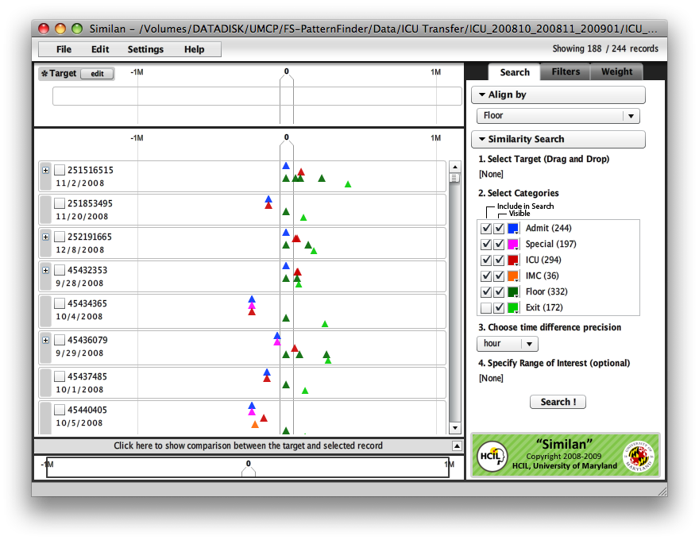
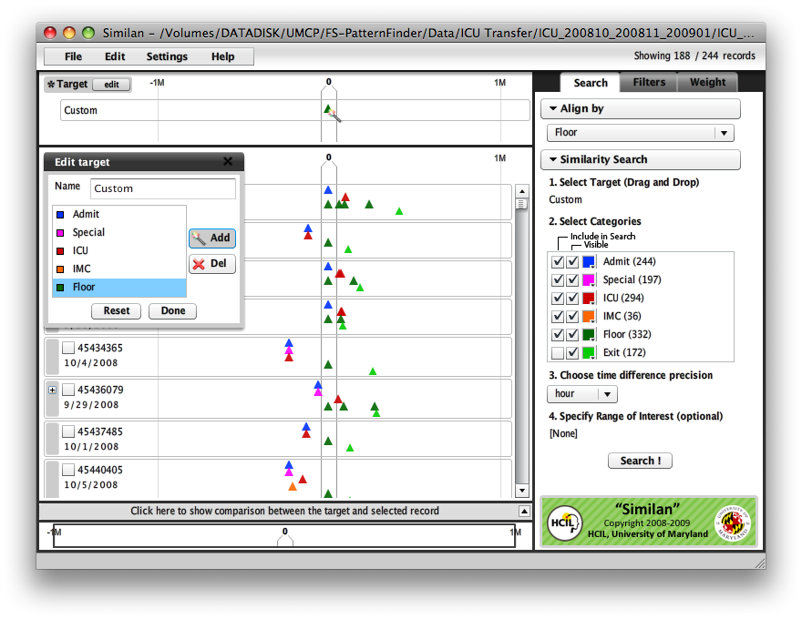
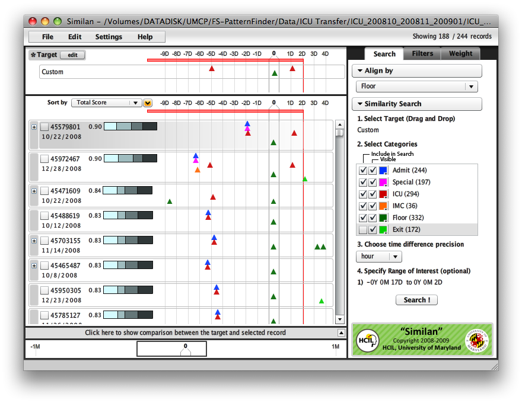

Step-by-Step InstructionsTask: Find patients who were transferred from ICU to floor and transferred back to ICU within 2 daysTool: Similan by: Krist Wongsuphasawat Last update: July 31, 2009 Other alternative(s): See how to do this task in LifeLines2.
1. Load the data fileLoad file from the menu 
2. AlignAlign by "Floor". We then call "Floor" the Sentinel event.

3. Draw events on the timelineClick on "edit", "Create new target" and select category and click on the "Add" button. The cursor will change to magic wand. Click on the timeline to place event at that location. In this example, we drew "Floor" at time zero first and "ICU" before the "Floor" and another ICU at one day after time zero (because it is the middle of 2 days).

4. Set the rangeDraw a selection on the top of the timeline to specify range of interest (indicated by red line). In this example, we set the range to 15 days before the floor until 2 days after floor 
5. SearchClick on "Search" and you will get a result like this. The most similar records (by default definition of similarity) are on the top.

6. FilterTo make the result more precise, because we know that there must be at least two ICU in this range so we add filter to it and click on "Apply Filter". 
7. DoneThis is the result. The top 7 patients from 244 patients were transferred from ICU to floor and transferred back to ICU within 2 days. 
|